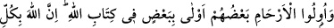
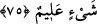

“Mağfiret” günahlarının bağışlanması “ve bol” geniş ve çok “rızık da onlarındır.”
Allah Teâlâ onlara cennette öyle yedirir içirir ki, yedikleri misk gibi kokan bir ter
şeklinde dışarı çıkar. Dünyada olduğu gibi pis kokuya ve pisliğe dönüşmez.
Bu iki hususta sonradan onlara katılacak ve onların sıfatlarıyla sıfatlanacak kimseleri
de kendilerine ilâve ederek Allah şöyle buyurmuştur:
75. Sonra îman edip hicret eden ve sizinle birlikte savaşanlara gelince: Onlar da
sizdendir. Akrabalar Allah’ın Kitabı’na göre birbirine daha yakındır. Allah her şeyi
hakkıyla bilendir.
Ey muhacirler ve ensar, ilk hicretten “sonra îman edip” sizden sonra “hicret eden
ve” bazı gazvelerde “sizinle birlikte savaşanlara gelince: Onlar da sizdendir.”
Onlar, kendilerinden sonra gelen kimselerdir ki: “Rabb’imız! Bizi ve bizden önce
îman eden kardeşlerimizi bağışla.” derler.” (el-Haşr, 59/10) Allah da lütuf ve
keremiyle îman ve hicrete teşvik etmek için onları önceden gelenlere (sâbıkûn) katmış
onlardan saymıştır.
Rivayete göre Hz. Peygamber (s.a.v.) muhâcirlerle ensarı birbirine kardeş yaptı.
Muhacirlerden olan kimseye, müslüman bile olsa hicret etmeyen akrabâsı değil,
ensardan olan kardeşi mirasçı oluyordu. Allah Teâlâ şöyle buyurarak bu hükmü neshetti:
“Akrabalar Allah’ın Kitabı’na” yani hükmüne “göre birbirine” mîrasçı olma
konusunda yabancılardan “daha yakındır. Allah her şeyi hakkıyla bilendir.” Mirasın
önce dînî yakınlığa, sonra da nesebe dayalı yakınlığa bağlanması da onun bilgisi
dahilinde olan yüce hikmetlerdendir.
Oınun hükümlerinde nasıl ve niçin yoktur
Oınun fiillerinde de ne şekilde ve kaç yoktur
Bilesin ki ilk muhacirler, îmanın ve Rasûlullah (s.a.v.)’e uymanın temelini attıkları
için ensardan daha fazîletlidirler. Hz. Peygamber (a.s.)’ın şu sözleri buna delâlet
etmektedir: “Hicret (daha fazîletli) olmasaydı, ensardan bir kişi olurdum.”[81]
Efendimiz’in bu sözlerinden muradı, hicretten sonra dine yardım etmekten daha üstün
bir mertebe olmadığını ifade ederek ensara ikramdır.
Muhacirler de kendi aralarında çeşitli tabakalara ayrılırlar:
Bir kısmı, Peygamber (s.a.v.) ile beraber veya O’nun hicretinden sonra Hudeybiye